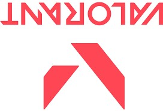
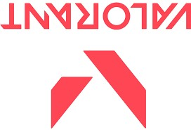

Valorant
Valorant is a free-to-play first-person hero shooter developed and published by Riot Games, for Microsoft Windows. Teased under the codename Project A in October 2019, the game began a closed beta period with limited access on April 7, 2020, followed by a release on June 2, 2020. The development of the game started in 2014. Valorant takes inspiration from the Counter-Strike series of tactical shooters, borrowing several mechanics such as the buy menu, spray patterns, and inaccuracy while moving.
 
